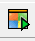
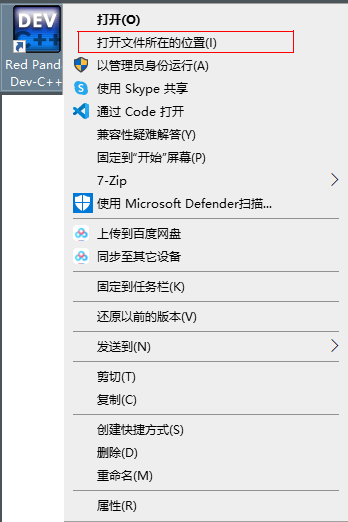
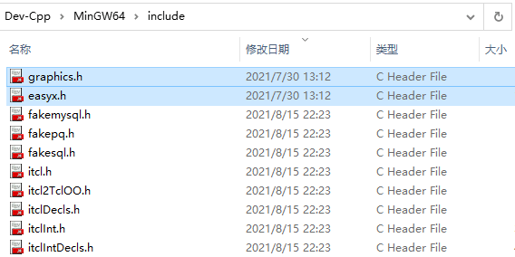
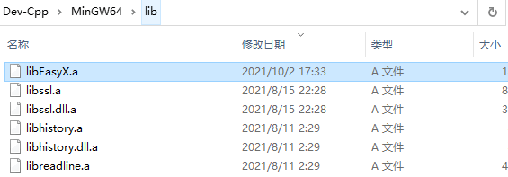
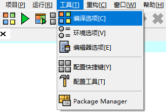
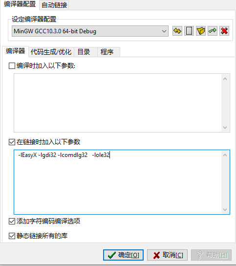
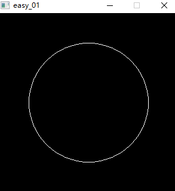

内容介绍
这是一本面向孩子特别是小学、初中学生的编程书，并且内容循序渐进没有难度， 每一个知识点都是基于过去的知识依次递进，目的是让好奇心驱动得到反馈，无意之中学到知识使学习保持乐趣。
作为学生还可以通过本书的学习参加<<全国青少年信息学奥林匹克竞赛>> 在业余时间提高逻辑、数学、英语、设计能力以赛促学。 这是五大科学竞赛之一已经成为很多高校招生的参考条件。
如果你没有基础但是对编程感兴趣一样可以看懂。通过阅读本书带你一点点了解程序是怎么运行，
如何动手来做一个按自己意思执行的程序。
通过本书的旅程将入门c++并把知识点串接在一起，形成一个意识中地图。
用生活化的语言讲述抽象的计算机概念,以目标为导向拆解问题，实践刚学的知识以练代学结合可视化输出增强反馈方便纠正。
现有的问题
在现有的c++教材中都注重教知识点，一章一章以便于你应付考试， 忽略了学习是一趟旅程而不是零散的知识点。不能完整的建立学以致用的目标。 经常用枯燥的黑色窗口来表示结果。让学习阻力重重。
引入太多计算机概念和行业名词，跳过了演进过程只讲结果让人云里雾里。 由于编程的知识点众多大部分的书，常全尔不精没有讲的细致，没把来龙去脉说清楚。 更应篇幅显示导致讲了知识缺少举一反三的练习部分。
给家长的建议
突破边界来超越同龄人，在学校里学的都是每个学生应该学的东西， 正因为每个人都会所以并没有溢价，也不会带给孩子优越感和自信。学一点课外特长不仅仅可以开阔视野也让以后能用得上。
- 孩子懂得越多越愿意去做会的东西，从而形成一个正反馈。
- 编程往往不止几分钟，可以专注做一件事情。
- 程序可以分享给同学来展示自己从而变的积极主动。
- 人以群分可以结交聪明和好学的朋友。
未来一定是数字的世界，手机里有程序，工作的电脑里有程序，汽车里中控台有程序。
学习中最大的问题是放弃，在热情使用完之前，没有得到成长结果的反馈。
所以从家长的角度应该鼓励和关注到新东西，不要以苛刻的要求去挑剔带来负面反馈，
每个孩子对知识的胃口都是不一样，过载就会带来逃避心理。
学习中最大的动力是乐趣，在游戏和在学习都能得到快乐，但是家长感孩子更喜欢游戏抗拒学习。
在游戏中会体会到乐趣和反馈，成功得到奖励失败还有再来一次的机会，
假设4个人打麻将娱乐一下，刚一坐下来有人就掏出枪指着你，你必须出某一张牌不然就打你，
你还能从中得到快乐吗。心里想你打打死我算了，打死我我也不玩了。
最可怕的形成不努力就要挨骂，学不好就要挨打的惯性思维。
我眼中的孩子
小孩子最大的特点是好奇心强专注力弱， 总能发现孩子这个也喜欢那个也要玩， 三分钟热度过后就放弃去找下一个。但同时我也见过一个孩子使用PAD比大人还熟练， 也有孩子能用手机的红外功能关空调。 所以不要给孩子设限c++是大学的课程现在学不了。孩子像一张白纸也像一匹骏马， 马有千里之程，无骑不能自往。只要有引导和自己的付出，乘上时间的累积回头看去已今非昔比。
特色-人性化学习
- 不走弯路，编排课程从全局规划最平滑学习路径。
- 从孩子角度重述知识，解决懂行人很难再以不懂的角度讲述知识1。
- 游戏做抓手，让孩子从玩游戏到做游戏。
- 可视化即时反馈，更多自由发挥的空间。
- 自驱，以阶段任务驱动成长。
- 课后陈述带动学习2
教学方法
如果已经学会了c++在回来看， 应该就变得很容易了。学习过程也类似。大量未知信息让学习困难重重。 不妨用已知去推导未知，前期先慢慢展开理解后，再从基础上构建新的知识。 通过动手练习来消化巩固前知识。
先确定一个可实现的小任务，任务是一个整体而完成它首先要分解成步骤， 在完成任务的过程中必然会碰问题，带着问题去学习。从场景-困惑-询问-解答来主动学习3， 达到学以致用，从学习到实战。并加入了以练带学的模式。
学习曲线
环环相扣前后呼应。阶段转折最后形成一个完整的脉络。引入故事带动情感和好奇心。最求完成弥补遗憾过程激发动力。
模式填充
一点一点演进的学习方式
🌰 🤓 💬 📢 ⏳ 💌 📖 📘 📚 📄 🧪 💯

第一个程序
什么是c++
C++是C语言的继承，它既可以像C语言一样过程化 设计程序 ，又可以基于对象设计程序。C++ 拥有运行高效的高级程序设计语言 。
首先它是一门语言，可以让我们和电脑之间交流，并且通过设计程序可以让电脑帮助我们做很多事情。
程序从哪里开始
假如程序是一座房子，那么它应该有一个正门。里面可能有很多个房间。往前走房子的另一头还有一个出口。那么程序应该从一个入口开始，main(主要的)就是程序的入口。
最简单的程序
让我们开始写第一个简单的程序，简单到它只有入口和出口还有四面墙，房间里面什么都没有。
int main() //入口
{//房间
return 0;//出口
}
我可以把这些字输入到软件Dev-C++中
点击两下打开
如果还没有安装可以 点击 查看安装方法。
如何使用dev cpp
启动dev c++这时候会看到一个类似这样的界面

工具栏
这部分为快速工具

第一个 点击一下可以让我们快速的建立一个空文件，就可以开始c++程序的编写，当编写完成后就应该保存起来并且取个名字，那就应该点击
点击一下可以让我们快速的建立一个空文件，就可以开始c++程序的编写，当编写完成后就应该保存起来并且取个名字，那就应该点击
 ，这时会让你选一个地方保存起来。
，这时会让你选一个地方保存起来。

取一个好记的名字并且点保存就完成了。
我的程序
似乎到现在我还没看到我写的程序，只是一个文件与几行代码。所以需要把代码转换成程序可以点击这里 ，开始编译并执行刚才的文件，编译的过程就像一个英语老师检查文件是否符合c++语法，检查完还会把它翻译给机器让它运作起来。

虽然这个程序什么都没做，但是却是一个里程碑。你已经写出了第一个c++程序并且让他运行起来了，是不是很简单。程序从main这个入口开始，最后到return这个出口出去。
好了现在要个程序加点料让它充实一点，来继续探索输入输出小推车。
🌰 🤓 💬 📢 ⏳ 💌 📖 📘 📚 📄 🧪 💯

输入输出小推车
给程序加点料
已经完成了一个非常简单的c++程序，不过太简单一点也不吸引人。
现在要给他加点东西，至少让程序说一句“你好 主人”。
让程序说话
想让程序输出你好主人那就需要用到一个工具，这个工具叫做iostream其实他是一个工具箱里面有很多工具。
中文名字我叫他“输入输出工具箱”里面有out(输出)工具、in(输入)工具。这两个工具像小推车可以装上东西往外送，也可以把东西运到程序里去。
来实际使用一下，先看一下完整的代码。
#include <iostream> //打开工具箱
int main() { //入口
std::cout << "你好 主人" ;//输出内容 你好 主人
return 0;//出口
}
其中
#include <iostream> //打开工具箱
工具在使用之前把它先拿出来，所以这一行往往放在最前面。include(包含)就是相当于拿出工具箱。
std::cout << "你好 主人" //c out
c++是从c发展而来可以看到这里out(输出)用了cout在前面加了c。 那么"你好 主人"就是程序要输出的内容,而<<像一个指示方向把要输出的东西装上cout小车。std::又是什么？可以理解成工具箱所在的房间。
当点击
开始检查是否有错误并把刚刚的新代码翻译成机器能理解的程序。通常叫他编译并运行。假如没有问题将看到如下：
你好 主人
--------------------------------
Process exited after 0.2513 seconds with return value 0
请按任意键继续. . .
提高一点点
要求把你好 主人一行输出变成两行，其中一行输出你好，下一行输出 主人。
这里就需要一个换行工具，来看一下代码。
#include <iostream> //打开工具箱
int main() { //入口
std::cout << "你好";
std::cout<<std::endl;//换行工具
std::cout<<"主人" ;
return 0;//出口
}
其中endl就是换行，前面的std就是这个工具所在的房间。
给人看的注解
在上面的代码中常看到 // 后面跟着很多中文字。其实//后面的字通常给人看。这样的东西一般称为注解。如果有很多行注解应该怎么写呢？来举个例子。
#include <iostream> //打开工具箱
/*
这里也是注解
第二行注解
*/
int main() { //入口
std::cout << "你好 主人" ;//cout输出内容
return 0;//出口
}
使用 // 和 /*.... */ 来注解这样有了注解更好理解。
来聊聊输入
程序可以输出文字是不是也可以输入文字呢？那当然可以。 先来看一个例子
#include <iostream> //打开工具箱
int main() {
std::string word; //它存放输入的内容
std::cout << "请输入文字：" ; //输出一行内容
std::cin >> word; //等待输入
std::cout << "输入的是 " << word; //输出结果
return 0;
}
其中有两行很特别
std::string word; //它存放输入的内容
这一行可以理解成准备一个盒子，盒子的名字叫word当然也可以用一个其他名字。这个盒子适合装输入的文字。
std::cin >> word; //等待输入
这里in(输入)但是前面有一个字母c， 所以cin就是程序输入，后面跟着>>就像一个指示，指示程序把输入的东西装进叫word盒子然后送到程序之中。
这个程序都做了写什么？
- 首先它输出了
请输入文字：这几个字 - 然后就来到cin这个时候可以打入文件
- 现在打入的文字已经装在word里了
- 最后把
输入的是和装在word里的文字一起显示出来
挑战我能行
要求:来做一个程序实现自我介绍。输出如下
金老师好！我叫孙悟空！
孙是孙子的孙！悟是觉悟的悟！空是空气的空！
我来自西红市小学！
我嘛……第一次学！请多指教！
My English name is Ailan!
--------------------------------
Process exited after 0.227 seconds with return value 0
请按任意键继续. . .
请🧪试一下 ⏳
请勿打开!!! 💡锦囊妙计-自我介绍
假如实在做不出来，可以打开锦囊妙计 📢锦囊妙计-自我介绍
🌰 🤓 💬 📢 ⏳ 💌 📖 📘 📚 📄 🧪 💯
省事的约定
省事又高效
经过输入输出学习后，发现一个现象，
总是重复的在输入std因为工具箱里的工具都被放在了叫std的房间里，这样太不方便了。对！大家都这么觉得，能不能来一个约定默认就去std房间里面拿工具，而不是每次都明确的说一边。当然可以这就是using(使用)。来举一个例子它是如何约定的。
#include <iostream> //输入输出工具箱
using namespace std; //我们的约定
int main()
{
cout << "我叫孙悟空！" <<endl;
}
这样是不是更加简洁明了，不用重复写std::了。
其中
using namespace std; //我们的约定
就是一个约定，约定就从std中房间中去拿工具。namespace（命名空间）可以理解成一个仓库。是不是还可以自己创建一个仓库？当然可以但是不是现在，先应该了解c++的方方面面再来给程序创造自己的房间和工具。
我是搬运工
使用 using 不仅仅可以创建一个约定，它可是省事省力的工具，可以把要用到的工具给搬出来。方便我们直接使用，举个🌰例子。
#include<iostream>
//using namespace std; //当前行无效了
using std::cin, std::cout, std::endl;
int main(){
cout<<"我叫孙悟空！"<<endl;
}
这里使用using把cin，cout，endl工具给搬出来了，现在使用也可以不加std前缀了。
🌰 🤓 💬 📢 ⏳ 💌 📖 📘 📚 📄 🧪 💯
以练代学
学以致用
学习一项技能最不可缺少的是反复使用最终内化，可别一学就会一用就废。 为了方便练习特别引入了easyx特别简单的图形工具库，这样程序图形化效果所见即所得。
没有安装图形库工具 点击 查看安装方法。
一定要安装好后再继续否者可能无法正确显示图形
get新技能
画基础图像
有了图像库工具箱就可以用它来绘制一些图形，同时来练一练c++编程。 在开始绘图前先来了解一个概念坐标。

窗口有横坐标x和纵坐标y,特别的是起点(0，0)是在左上角。
绘制第一个图像
来绘制一个圆，需要工具箱里面的工具circle(圆圈)
或者绘制一个实心的圆用fillcircle(填充的圆圈)，
快来看一个例子🌰吧!
#include <graphics.h> //打开图形工具箱
int main() { //入口
initgraph(400, 300); //创建一块画布 大小400*300
circle(150,150,50); // 画一个圆 位置在(150,150) 大小50
system("pause"); //暂停 直到有人按键盘
closegraph(); //关闭画布
return 0; //离开
}
其中
circle(150,150,50); // 画一个大小50的圆
才是真正画圆的，其它都是准备工作。可以省略吗？当然不可以特别是
initgraph(400, 300); //创建一块画布
假设没有画布那么圆就不知道应该画在哪。后面
system("pause"); //暂停 直到有人按键盘
closegraph(); //关闭画布
也是不能省略，当画完圆后马上画布收起来就没法看到效果，如同没有画过一般这样也不可以。
改变圆
在画圆工具circle中输入的(150,150,50)其实是指定圆在画布中的位置和大小，
相当于圆圈(x坐标位置，y坐标位置，大小)其中大小指半径。
假如把参数坐标改成如下
circle(150,150,150); //大小和坐标一样
请🧪试一下，这时将得到一个紧贴边缘的圆

围绕坐标x:150，y:150画一个半径150的圆,那么正好画到画布的边上。如果把圆画到画布外面会发生什么呢？如果把x和y都改为0会怎么样呢？
circle(0,0,150);
请🧪试一下，这时将得到一个四分之一圆

一大半的圆在画布外面只是看不到了。
实心圆
画一个圆球就需要另一个画圆工具fillcircle()同样它也需要3个值，
才能知道应该把圆画在哪里以及画多大。来试一下看看它的效果有什么不同？
fillcircle(0,0,150); //实心圆
得到一个四分之一个圆球

空心和实心使用的是不同的工具，但是使用方法却是一样。
挑战我能行
首先来看一下效果

这里的任务是绘制米老鼠，但是只用到了画圆和画实心球， 运用上学过的知识和一点想象力。
请🧪试一下 ⏳
请勿打开!!! 💡锦囊妙计-米老鼠
假如实在做不出来，可以打开 📢锦囊妙计-米老鼠
🌰 🤓 💬 📢 ⏳ 💌 📖 📘 📚 📄 🧪 💯
画长方形
当画过圆后发现可视化的画图并没什么难的，
现在需要再来一点东西丰富画布。
那就来画一个方形需要用到工具rectangle(长方形)
快来看一个例子🌰吧!

代码如下 请🧪试一下
#include <graphics.h> //打开图形工具箱
int main() { //入口
initgraph(400, 300); //创建一块画布
rectangle(50,50,200,200); //长方形
system("pause"); //暂停 直到有人按键盘
closegraph(); //关闭画布
return 0; //离开
}
其中
rectangle(50,50,200,200); //长方形
是用来绘制这个正方形，rectangle工具可以绘制各种长宽的方框，
而其中(50,50,200,200) 就是方框所在的位置。
rectangle(左上角x位置，左上角y位置，右下角x位置，右下角y位置)。
其他代码是准备和收尾工作。
能用宽高+位置来绘制方框吗？动动脑筋还是可以的。
例如：rectangle(x位置，y位置，x位置+宽，y位置+高)
来🧪试一下 代码改成
rectangle(50, 50, 50 + 150, 50 + 150); //长方形
这样方框的位置x:50，y:50，宽高都是150。结果是不是完全一样？
实心方框
现在就来画一个长条形方块，用到的工具是fillrectangle
与rectangle方框工具区别仅仅是fill而已，
如果前面有fill那么就是一个被填充了的方框。
#include <graphics.h> //打开图形工具箱
int main() { //入口
initgraph(400, 300); //创建一块画布
fillrectangle(50, 50, 50 + 150, 50 + 20); //长方形
system("pause"); //暂停 直到有人按键盘
closegraph(); //关闭画布
return 0; //离开
}
来🧪试一下 ，是否出现如下效果

这里长方形就像一块木板，因为把参数改成了(50, 50, 50 + 150, 50 + 20)，
它的高度从150变成了20，所以这个长方体是宽150高20。
挑战我能行
挑战任务“棒棒糖”结合学过的圆和方块结合起来. 糖部分半径可以是30，棒：的宽6高110
绘制效果如下

来🧪试一下
🌰 🤓 💬 📢 ⏳ 💌 📖 📘 📚 📄 🧪 💯
变量与类型
变量是个啥
它像一个存钱罐，要是把1元钱放进去里面就有1元， 再放1元里面就是2元。 当然有一天存到了100元也可以把它全拿出来。 这样存钱罐里面就是0元。也可以想象成一个水杯可以装水， 热水冷水或果汁都可以。 只是存钱罐应该装钱而杯子应该装液体，搞混了可就麻烦大了。
数据类型
那么变量里面通常放点啥呢？通常有文字数字还有真真假假的结果。
用一张图来概况一下。
 文字分为一个字的叫
文字分为一个字的叫字符和一大段文字的叫字符串，
数字分为没有小数点的叫整数和有小数点的浮点数，
还有就是真和假通常叫它布尔值真的用英文中true表示
假的就是false。
🌰 🤓 💬 📢 ⏳ 💌 📖 📘 📚 📄 🧪 💯

装数字的盒子
数字变量
来试一下怎么把数字20装进一个变量，
首先20是一个整数应该给它找一个合适的盒子
那就是整数类型的盒子用int来表示
再给盒子贴个标签或这叫取个名字叫na。
就有了这样的语句。
int na = 20;
写完一句后面都应该加上一个;表示结束。
🌰 🤓 💬 📢 ⏳ 💌 📖 📘 📚 📄 🧪 💯
数字文字
变量作用域
运算符
加减乘除
锦囊妙计
当碰到问题时，可以来到这里。这里准备了答疑解惑和课后作业的代码。 让学习之路少碰壁，并通过阅读代码从另一个角度理解程序实现的思路。
线上互动
通过网络可以观看视频帮助学习理解。
锦囊妙计101
自我介绍思路
自我介绍只需要用到cout输出即可，同时可以加上endl换行，让每一句话都从头开始显示。
介绍内容可以用一个套路，我是谁、从哪里来、到哪里去、为什么去。
代码
💬
#include <iostream> //打开工具箱
using namespace std; //省事的约定
int main()//入口
{
cout << " 金老师好！我叫孙悟空！"<<endl;
cout <<"孙是孙子的孙！悟是觉悟的悟！空是空气的空！"<<endl;
cout << "我来自西红市小学！" << endl ;
cout << "我嘛……第一次学！请多指教！"<<endl;
cout << "My English name is Ailan!" <<endl;
}
🌰 🤓 💬 📢 ⏳ 💌 📖 📘 📚 📄 🧪 💯

锦囊妙计102
米老鼠思路
这里只用到了画圆和圆球，需要一个大圆球来充当头， 剩下就是画耳朵和耳圈。 耳朵一个在左边一个右边， 假设头Y坐标是150那么一个耳朵的Y坐标减去n另一个Y坐标加上n 就变成左右各一个，耳圈和耳朵相同坐标只是更大一点， 并且换成了圆而不是圆球。
代码
#include <graphics.h> //打开图形工具箱
int main() { //入口
initgraph(400, 300); //创建一块画布
//头
fillcircle(150,150,40); // 头
//实体耳朵
fillcircle(120,110,15); // 耳朵a
fillcircle(180,110,15); // 耳朵b
//圆
circle(180,110,20); // 耳朵外圈a
circle(120,110,20); // 耳朵外圈b
system("pause"); //暂停 直到有人按键盘
closegraph(); //关闭画布
return 0; //离开
}
🌰 🤓 💬 📢 ⏳ 💌 📖 📘 📚 📄 🧪 💯
锦囊妙计102
米老鼠思路
这里只用到了画圆和圆球，需要一个大圆球来充当头， 剩下就是画耳朵和耳圈。 耳朵一个在左边一个右边， 假设头Y坐标是150那么一个耳朵的Y坐标减去n另一个Y坐标加上n 就变成左右各一个，耳圈和耳朵相同坐标只是更大一点， 并且换成了圆而不是圆球。
代码
#include <graphics.h> //打开图形工具箱
int main() { //入口
initgraph(400, 300); //创建一块画布
fillcircle(150, 90, 30); //糖 30
fillrectangle(150 - 3, 90, 150 + 3, 90 + 110); //棒 宽6高110
system("pause"); //暂停 直到有人按键盘
closegraph(); //关闭画布
return 0; //离开
}
🌰 🤓 💬 📢 ⏳ 💌 📖 📘 📚 📄 🧪 💯
关于我们
初心
知道没有用，会用才有用。用才是关键
安装DEV C++
这是一个很适合入门并且强大的编辑器
如何下载
传送到下载页面点击这里，
由于软件一直在更新为了方便就使用 Dev-C++ 6.7.5本版，这里点击Dev-Cpp.6.7.5.MinGW-w64.X86_64.GCC.10.3.Setup.exe就会开始下载，注意：区分w64.X86_64与w64对于64位电脑和32位电脑
这个更加稳定可以省去很多不必要的麻烦。
如何安装
连续点击两下Dev-Cpp.6.7.5.MinGW-w64.GCC.10.3.Setup.exe文件就开始安装，期间它会提示是否接受，然后下一步，点开始安装。
安装结束点完成即可。
首次运行
Red Panda Dev-C++首次运行会提示一些设置只要一直点击下一步即可。
最后点击OK就完成了安装。
简单设置
如果你的界面是黑色的或者界面看起来不喜欢， 没有关系我们可以来设置一下。
在编辑器选项中可以设置颜色字体大小等等
建议设置配色中的预设把它选成"Classic Plus" 然后点确定。
🌰 🤓 💬 📢 ⏳ 💌 📖 📘 📚 📄 🧪 💯
安装图形工具
图形工具库下载
首先需要下载点击这里 传送到下载页面，下载easyx4mingw.zip 下载完成后， 只需要把里面的文件复制到指定目录就可以使用了。
建议-百度下载
链接：https://pan.baidu.com/s/1afmgfMoe0fSpyJWDI30vOA?pwd=80jo
提取码：80jo
安装图形库
easyx4mingw 里面包含文件
easyx4mingw
├ easyx.h
├ graphics.h
├ libEasyX.a
1.把其中easyx.h和graphics.h两个文件复制到Dev-Cpp安装目录下面的\MinGW64\include目录中。
2.把文件libEasyX.a复制到Dev-Cpp安装目录下面的\MinGW64\lib目录中。
如何打开安装目录
只需要用鼠标右击图标，选择打开文件所在的位置即可。

就会打开Dev-Cpp的安装目录
完整完成
这时候include目录里就有了easyx.h和graphics.h

lib目录中就有了libEasyX.a

让我们试一下图像界面的程序吧，把一下代码复制到dev-c++中并保存和编译运行。
#include <graphics.h>
int main()
{
initgraph(300, 300);
circle(150, 150, 100);
system("pause");
closegraph();
return 0;
}
错了怎么办
运行出现如下类似的错误。
undefined reference to `circle(int, int, int)'
这是因为安装了图形库并没有真正在使用它，让我们来把它和程序链接起来。
在工具-》编译选项。

加入如下内容（链接参数）
-lEasyX -lgdi32 -lcomdlg32 -lole32
如图：

点击确定再次编译运行应该会出现。
如图： 程序效果

大功告成
恭喜你又学会了一个新技能，图形工具箱。在之后的练习中会解锁更多图像绘制。
🌰 🤓 💬 📢 ⏳ 💌 📖 📘 📚 📄 🧪 💯
少儿编程到底学什么？
趣味性强，锻炼思维为主，创造和设计，专业学习和职业技能打下基础
孩子学编程有什么用？
通过编程游戏启蒙、可视化图形编程等课程，培养学生的计算思维和创新能力的课程
什么是编程思维
-
分解：把一个复杂的大问题，拆解成更可执行的小步骤。
-
识别：找出相似模式，发现事物规律。
-
抽象：聚焦最重要的信息，忽视无用细节提取本质。
-
算法：设计解决路径，问题的总体概括。